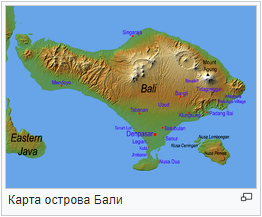
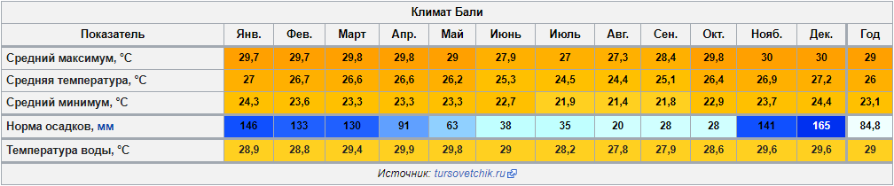
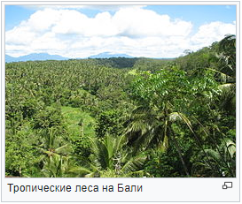
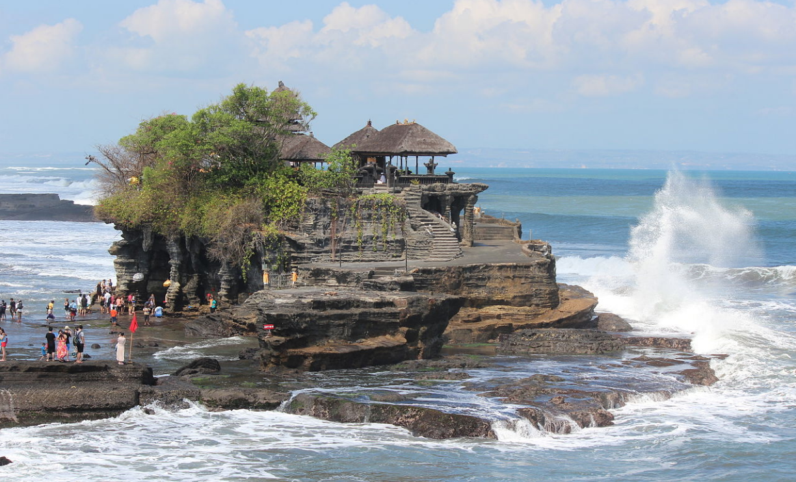
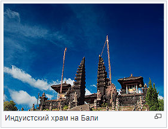
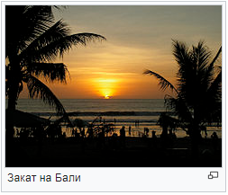

География
_____________________________________________________________________________Площадь острова составляет 5416,4 км²[8], протяжённость — 145 км с востока на запад и 80 км с севера на юг. Так называемая линия Уоллеса, протянувшаяся от Бали и острова Ломбок в восточном направлении, служит границей между флорой и фауной тропической Азии и природными зонами Австралии и Новой Гвинеи.

Рельеф
Бали — самый западный из Малых Зондских островов. С запада на восток Бали протянулась горная цепь — зона высокой вулканической активности. Два больших действующих вулкана Агунг (2997 м[9]) и Гунунг-Батур (1717 м) расположены в северо-восточной части острова. Вулканическая деятельность обусловливает высокую плодородность почв и влияет на развитие культуры. Крупные извержения вулканов Гунунг-Батура и Агунга, произошедшие в 1963 году, привели к многочисленным жертвам, опустошили восточные районы острова, вынудив многих балийцев эмигрировать.
Среди других горных вершин самые высокие Батукау (2276 м) и Абанг (2152 м)<> Этот горный хребет с расположенным на юге известняковым плато, которое называют «букит» — холмы, делит территорию острова на два абсолютно разных региона. Северный довольно резко поднимается от узкой береговой линии к горным склонам. Здесь относительно сухой климат, благоприятствующий разведению культуры кофе. В этой части Бали находятся две реки, орошающие рисовые поля вокруг Сингараджи и Серирита. Южный же регион представляет собой протянувшиеся с севера на юг террасы, на которых выращивают рис. Многочисленные реки текут по ущельям с пышной растительностью. Юго-запад — это небольшие, хорошо орошаемые участки земли и засушливые земли плантаций кокосовых пальм.
Климат
Климат на Бали экваториально-муссонный, вместо привычного деления на 4 сезона здесь различают лишь два: сухой (июнь—октябрь) и влажный (ноябрь—март), наибольшее количество осадков выпадает в январе—феврале. В некоторых районах Бали разница между ними почти незаметна. В период влажного сезона осадки выпадают локально, как правило, ночью в виде кратковременных (1—2 часа) грозовых ливней.
Среднегодовые температуры незначительно колеблются вокруг отметки 26 °C. В низинах и курортных зонах тепло и днём, и ночью; в горах довольно прохладные ночи, и в целом посвежее, чем на остальной территории. Температура воды в океане 26—28 °C.
Растительный и животный мир
На Бали произрастают 4 вида лесов: влажные вечнозелёные тропические на западе, листопадные на северо-западе в труднодоступных районах, леса саванны и горные леса. Влажные вечнозелёные леса представлены в парке Бали-Барат (в переводе означает «западный Бали»). Здесь можно встретить редкие виды растений, огромные вековые деревья, находящиеся под охраной. Много растений семейства фикусовых, фиговые и банановые рощи. Лиственные леса произрастают в северо-западной части Бали. Они меняют свою листву в зависимости от сезона, среди этой флоры преобладают сапотовые деревья. Горная растительность редко расположена выше 1500 м над уровнем моря, это, в основном, казуарины и филаосы. Банановые растения на Бали священны, они очень хорошо растут, размножаясь корнями, и кормят множество животных: обезьян, белок, летучих мышей. Редкий пещерный краб Karstama balicum внесён в Международную Красную книгу МСОП. На Бали особенно хорошо представлены пальмовые деревья. Листья борассовых пальм, высушенные и спрессованные, идут на изготовление «лонтаров», на которых пишут священные тексты. Из листьев сахарной пальмы составляют букеты, которые приносят в храмы, в качестве ритуальных подношений. Встречаются и другие виды деревьев, например, эбеновое, или чёрное дерево, а также бальзовое дерево, чрезвычайно лёгкое — удобный материал для традиционных масок. Много бамбуковых деревьев, некоторые виды которых достигают 30—40 см в диаметре. Их можно встретить почти по всему острову, бамбук является также универсальным строительным материалом для балийцев.
Садово-парковая архитектура превратилась в настоящую индустрию. Изобилие рабочей силы и плодородная почва, на которой легко приживается все, что посажено, способствует развитию садоводства, особенно на юге острова и в районе Бедугула. Красные, розовые и белые гибискусы, жасмин, бугенвиллеи, белые и розовые лавры, водяные лилии, лотосы и довольно экзотические растения, такие, как ангсока, чемпака (жёлтая магнолия), манори и орхидеи.
Население
_____________________________________________________________________________Основная статья: Балийцы
Всего на острове проживает 4 225 384 человека (2014). С начала XXI века население острова увеличилось более чем на миллион человек.
Бали — это индуистское общество, проживающее на территории мусульманской страны и постоянно контактирующее с иностранцами. Всё это лишь подогревает интерес к местным обычаям. Сами балийцы весьма гордятся своими традициями и обычно строго следуют кодексу поведения. Местное население настроено довольно антиисламистски, видя в данной религии угрозу своей древней культуре, не меньшую роль сыграли несколько крупных терактов, совершённых исламистами и оказавших негативное влияние на экономику острова, а также вера в то, что индонезийское государство, продвигая новые законы, стремится ограничить балийцев в их религиозной и культурной свободе. Несмотря на это, мусульманское население за счёт миграции постепенно растёт и увеличивает своё влияние на острове. Часто это богатые предприниматели и землевладельцы.
На Бали также проживает большое количество выходцев из Европы, Северной Америки и Австралии, преимущественно европейцев.
Города
- Денпасар — столица и крупнейший город острова.
- Сингараджа — промышленный город на севере острова.
- Кута — курортный город.
- Убуд — центр балийской художественной жизни.
Религия
Большинство балийцев (83,5 % населения) исповедует местную разновидность индуизма, которая называется «Агама Хинду Дхарма». 13,3 % населения — мусульмане. Они проживают в основном в Денпасаре, Сингарадже и небольших прибрежных городках. Эти цифры не включают «временных» мигрантов из других частей Индонезии. Христиан (1,7 %) и буддистов (0,5 %) мало — это китайцы, коренное население, а также проживающие на острове иностранцы (англичане, австралийцы, голландцы, французы, итальянцы и другие).
{kind=link}
Индуизм на Бали — сплав туземных верований, буддизма и учения Шивы, пришедшего из Индии (см. Маджапахит). Буддизм в форме махаяны (большой колесницы), которая распространена в Китае, на Тибете, в Корее и Японии. Буддийские брахманы сосредоточены в районе Карангасема. Агама Хинду Дхарма — это изменённое учение, которое называлось раньше «Агама Тирта» — это религия освящённой воды, смесь шиваизма и буддизма, пришедших с Явы. В её основе теологические представления философии индуизма, обставленные культовыми церемониями, уходящими корнями в языческие верования туземцев. Язычество особенно заметно в культе природных явлений и поклонении предкам. Природа рассматривается как высшая сила, и каждая из её составляющих имеет своих духов или духа, который может быть материализован в алтаре или задобрен подношениями (саджен) в виде сельскохозяйственных продуктов.
Кроме того, огромную роль в религиозных верованиях балийцев играют горы как приют богов и предков. Балийцы думают и действуют, ориентируясь на горы — пристанище богов. Они не начинают работу, не посоветовавшись со жрецом, чтобы узнать, благоприятен ли этот день и этот час, и как в этот момент соотносятся силы богов и демонов в космическом колесе времени. Строя дом, они следуют раз и навсегда установленным правилам, где должен располагаться храм (божественная часть), жилые комнаты (пространство людей), кухня и вход (убежище демонов).
Религия Бали известна во всем мире своими магическими ритуалами. Эти ритуалы и подношения следуют один за одним и призваны сохранить гармонию между миром людей и миром богов.
Террористическая активность
_____________________________________________________________________________Основная статья: Теракты на Бали (2002)
Основная статья: Теракты на Бали (2005)
В 2002 и 2005 годах произошла серия террористических атак, унёсшая жизни 228 человек и травмировавшая более 300 людей.
Транспорт
_____________________________________________________________________________Центральным и важнейшим транспортным узлом на острове является аэропорт Нгурах-Рай. Это современный и хорошо оснащённый аэропорт, находящийся недалеко от Денпасара, в 3 км от Куты, в 15 км от Нуса-Дуа и в 12 км от Санура. Его обслуживает множество такси. В 2013 году в аэропорту введен в эксплуатацию новый, большой международный терминал. В 2014 году был существенно модернизирован терминал обслуживающий местные рейсы.
Также начат проект по строительству нового аэропорта на севере острова.
Распространённый и недорогой вид транспорта на острове — это бемо, небольшие микроавтобусы. Есть несколько автобусных компаний.
Самый распространенный транспорт среди местного населения — мопед или мотороллер.
Для туристов и гостей острова доступны многочисленные агентства, в которых можно арендовать авто-, мототранспорт и передвигаться по острову самостоятельно.
Туризм
_____________________________________________________________________________После признания независимости туризм был довольно слабо развит, а инфраструктура пребывала в зачаточном состоянии. Даже во времена хиппи, которые стекались сюда со всего света, существовали лишь маленькие бунгало без электричества на пляжах Куты, дешёвые комнатки без удобств и блюда морской кухни за несколько центов. Тем не менее в Сануре туроператоры уже осваивали туризм для богатых. Правительству Индонезии, экономика которой была очень зависима от экспорта нефти, было необходимо найти и иные источники доходов, и оно весьма способствовало развитию индустрии туризма.
На первых порах эти усилия были направлены на то, чтобы изменить в глазах всего мирового сообщества неприглядный образ, укрепившийся за правящей верхушкой Индонезии после военного переворота.
Профессиональный анализ ситуации на Бали и план развития туризма был сделан в 1969 году. Проект был профинансирован ООН под поручительство Всемирного банка. Особый упор делался на район Букит-Бадунга. В 1978 году балийский губернатор Ида Багус Мантра предложил заинтересованным сторонам обратить внимание на богатейшую культуру острова. С этого времени музыка, танцы, религиозные праздники, скульптура и живопись играют такую же роль в туристическом бизнесе, как и постоянное совершенствование инфраструктуры. Реконструирован аэропорт, возводятся отели класса люкс и скромные недорогие гостиницы, чтобы охватить весь социальный спектр любителей путешествий. Осушаются рисовые поля и строятся водопроводы в самых засушливых районах. На смену недорогому пришёл элитный туризм. Теперь всемирно известные звёзды приезжают в Санур на церемонии бракосочетания, а европейские министры проводят отпуск в «Средиземноморском клубе» в Нуса-Дуа.
Развитие получили сёрфинг, дайвинг, экологический и пляжный туризм.
Количество туристов, посещающих Бали, быстро растет. За 2015 год на Бали побывало 4 001 835 иностранных туристов[19]. В 2018 году количество туристов возросло до 6 511 610 человек.[20] Каждый год поток увеличивается примерно на 10 %.
Достопримечательности
_____________________________________________________________________________- Храм Бесаких — самый крупный и наиболее важный индуистский храм на Бали.
- Храм Таман Аюн — главный храм королевства Менгви.
- Ботанический сад в кратере вулкана.
- Храм Улун Дану на озере Братан.
- Храм Лухур Улувату, где проходит представление танца кечак.
- Храм Танах Лот. Его так же называют храмом на воде.
- Вулкан Батур.
- Вулкан Агунг.
- Водопады Гит-Гит и Алинг Алинг. Всего на Бали по разным подсчетам около 130 живописных водопадов.
- Гунунг Кави.
- Гоа Гаджа — храм в пасти демона.
- Тирта Ганга — Водный дворец со святыми источниками в Амлапуре.
- Тирта Эмпул — храм со святыми источниками немного севернее Убуда.
- Таман Уджунг — королевская резиденция на востоке Бали.
- Лес обезьян в Убуде.
- Парк Бали Сафари.
- Гаруда-Вишну-Кенчана (парк)
- Гаруда-Вишну-Кенчана (статуя)
- Парк Таман-Нуса.
- Горячие минеральные источники у подножья вулкана Батур.
В популярной культуре
_____________________________________________________________________________Английский музыкант Майк Олдфилд под впечатлением от романтического путешествия на Бали с норвежской певицей Анитой Хегерланд, а также под воздействием оригинальной культуры жителей острова, записал свой альбом «Islands». Одна из композиций этого альбома, «The Wind Chimes», использовалась в титрах популярной советской/российской телепередачи «Клуб кинопутешественников».
В астрономии
_____________________________________________________________________________В честь острова Бали назван астероид (770) Бали, открытый в 1913 году немецким астрономом Адамом Массингером.
См. также
_____________________________________________________________________________Литература
_____________________________________________________________________________- Бали // Анкилоз — Банка [Электронный ресурс]. — 2005. — С. 704. — (Большая российская энциклопедия : [в 35 т.] / гл. ред. Ю. С. Осипов ; 2004—2017, т. 2). — ISBN 5-85270-330-3.
- Дёмин Л. М. Остров Бали / АН СССР, Институт народов Азии.. — М.: Наука, Глав. ред. вост. лит., 1964. — 304 с. (обл.)
- Коригодский Р. Н., Кондрашкин О. Н., Зиновьев Б. И., Лощагин В. Н. Большой индонезийско-русский словарь. — М., 1990. — Т. 1.
- Поспелов, Евгений Михайлович. Географические названия мира. Топонимический словарь. — 2-е издание. — М.: Русские словари: ООО «Издательство Астрель»: ООО «Издательство ACT», 2002. — С. 512. — ISBN 5-93259-014-9.
- Улиг Г. Бали — остров живых богов / Гельмут Улиг; Пер. с нем. — М.: Наука. Главная редакция восточной литературы, 1990. — 264 с. — (Рассказы о странах Востока). — 15 000 экз. — ISBN 5-02-016883-1. (обл.)